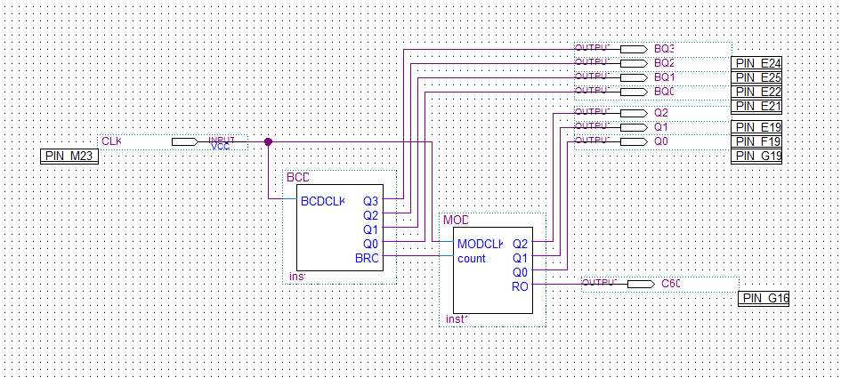
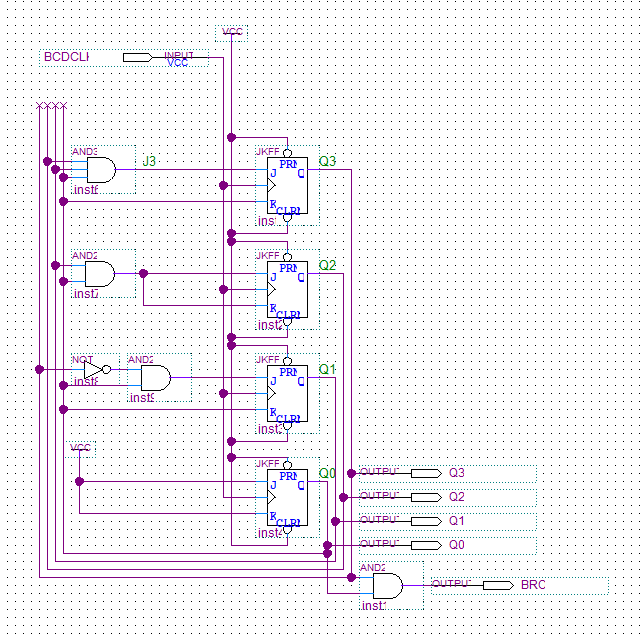
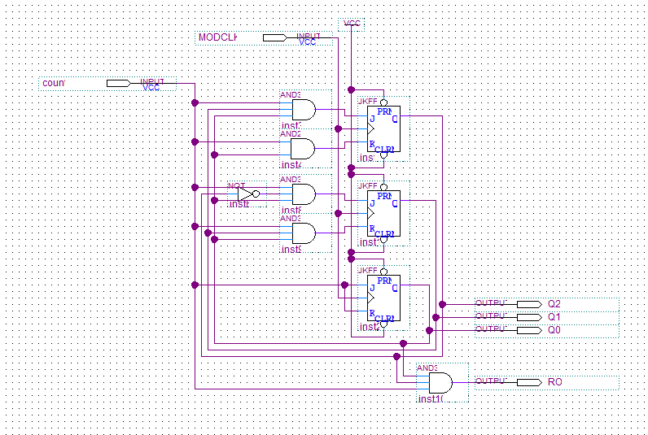

COURSEWORK / Labs 1–3 completed · Lab 4 in progress
CEG 2136 · Architecture Labs
Designing components to complete specific tasks, then bringing them together in an end-of-semester 4-bit CPU.
Computer Architecture I · Quartus · Digital logic · Individual labs
From individual components to a CPU
CEG 2136 is about computer architecture: understanding how components work, designing them to perform specific tasks, and connecting them into a larger system. Each lab is a step toward the final project, a 4-bit CPU with a control unit and ALU. I completed Labs 1–3 individually using Quartus Web Edition and FPGA testing. Lab 4 is in progress, with its blueprint drafted.
Organization is part of the design
I take this course as a challenge to be as organized as I can be. Before placing components in a Quartus Block Diagram File (BDF), I plan their spacing and the routes the wires will take. I want the layout to make the connections easy to follow, with enough room for each component and the signals around it.
My BDF files show that approach: the layout is something I plan alongside the logic. As the labs build toward a CPU, keeping the individual parts readable becomes an increasingly important part of how I work.
LAB 1 / Completed
Starting the lab sequence
My first completed lab in the sequence. The Quartus project and BDF are available below, alongside the later builds in the course repository.
LAB 2 / Completed
From components to a complete counter
I completed this lab individually using Quartus Web Edition. The schematics below show the overall modulo-60 design, followed by the BCD and modulo-6 circuits that make it up. Select any figure to open the full-size schematic.



LAB 3 / Completed
Continuing the architecture lab sequence
Lab 3 is also complete. It is part of the same progression of individual design and FPGA testing work leading into the final CPU project.
LAB 4 / In progress
Bringing it together: a 4-bit CPU
The end-of-semester project brings the course’s component-level work together in a 4-bit CPU with a control unit and ALU. I have drafted the blueprint and am applying the same layout-first approach: planning component spacing and wire routes before placing the design in the BDF.
This is the point where the organization of the smaller designs matters most to me: I want the finished schematic to be understandable as a complete system.
LET’S BUILD SOMETHING